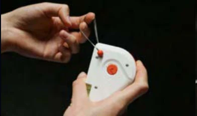
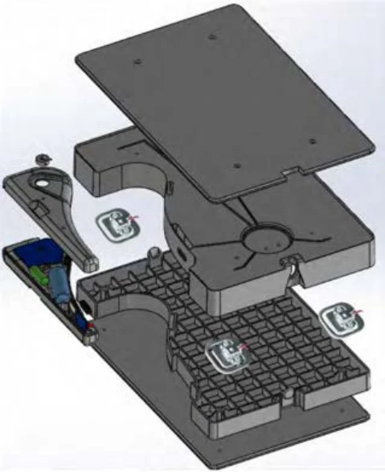
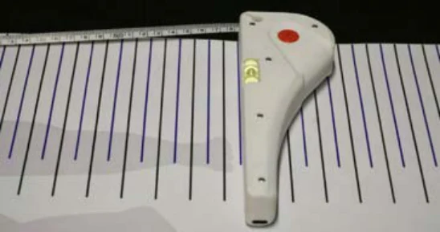
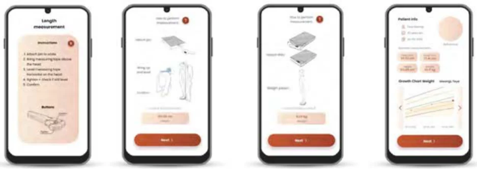

02 / Product engineering
Infant Growth Monitor
A portable system that combines a weighing scale, handheld measuring device, infant measuring mat and companion application for Community Health Volunteers.

The challenge
Community Health Volunteers in rural Cameroon work with analogue tools and handwritten records. Transferring measurements into hospital files takes time and creates opportunities for error. Our team explored how weight, height, infant length, head circumference and mid-upper arm circumference could be captured and digitised in one affordable system.

Engineering for field use
Detailed CAD development balanced component integration, durability, manufacturability and cost. The scale houses four load cells and stores the handheld device and measuring mat. The handheld uses a retractable measuring tape, rotary sensor and Bluetooth module. My portfolio documents Rhino modelling, SolidWorks structural analysis, drop-test simulation and investigation of injection-moulding constraints.

An integrated workflow
The companion application guides volunteers through measurements and the creation of a digital medical record. A fold-out mat supports infant length measurement, while accessible housings and protected electronics support repair and robustness. Physical prototypes and use-case scenarios demonstrate the proposed system; they are presented as design development rather than a deployed medical product.

